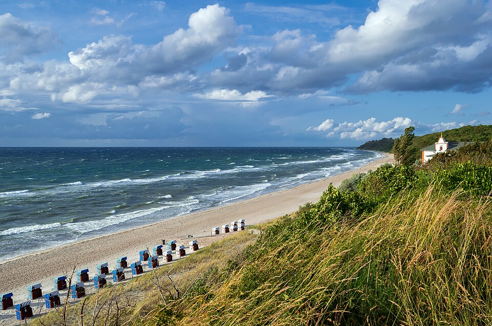

नेपाल के प्रधानमंत्री बालेन शाह आज नई दिल्ली पहुंचेंगे, द्विपक्षीय वार्ताओं पर रहेगी नजर
नेपाल के प्रधानमंत्री बालेन शाह आज आधिकारिक यात्रा पर नई दिल्ली पहुंच रहे हैं। माना जा रहा है कि दोनों देशों के बीच कई अहम मुद्दों पर पहले ही सहमति बन चुकी है, जिसकी घोषणा इस दौरे पर हो सकती है।

नेपाल के प्रधानमंत्री बालेन शाह अपनी पहली भारत यात्रा के तहत आज नई दिल्ली पहुंचेंगे। कूटनीतिक हलकों में इस दौरे को काफी अहम माना जा रहा है। रिपोर्ट्स के अनुसार, दोनों देशों के बीच विभिन्न द्विपक्षीय मुद्दों पर पहले ही सहमति बन चुकी है और इस यात्रा के दौरान कई समझौतों का औपचारिक ऐलान किया जा सकता है।
यह दौरा दोनों पड़ोसी देशों के बीच आपसी संबंधों को और मजबूत करने की दिशा में एक महत्वपूर्ण कदम माना जा रहा है। अधिकारियों के मुताबिक, इस यात्रा के दौरान व्यापार, ऊर्जा और बुनियादी ढांचा विकास से जुड़े प्रोजेक्ट्स पर मुख्य रूप से चर्चा होने की संभावना है।
और पढ़ें
अमेरिका के ओहायो में बेबी शॉवर के दौरान गोलीबारी, संदिग्ध समेत तीन की मौत
अमेरिका के ओहायो राज्य में एक गोद भराई समारोह के दौरान हुई गोलीबारी में संदिग्ध हमलावर समेत तीन लोगों की मौत हो गई और एक महिला घायल हो गई। पुलिस मामले की जांच कर रही है।

अंतरराष्ट्रीयबाल्टिक सागर के नीचे बन रही 18 किलोमीटर लंबी फेहमार्नबेल्ट सुरंग
डेनमार्क और जर्मनी को जोड़ने वाली 18 किलोमीटर लंबी पानी के नीचे की सुरंग का निर्माण तेजी से जारी है। इस प्रोजेक्ट के तहत सड़क और रेल मार्ग दोनों की सुविधा मिलेगी।
 अंतरराष्ट्रीय
अंतरराष्ट्रीयनेपाल के प्रधानमंत्री बालेंद्र शाह ने की प्रधानमंत्री मोदी से मुलाकात
नेपाल के प्रधानमंत्री बालेंद्र शाह दो दिवसीय भारत दौरे पर हैं। नई दिल्ली के हैदराबाद हाउस में प्रधानमंत्री नरेंद्र मोदी के साथ उनकी द्विपक्षीय बैठक हुई।
 अंतरराष्ट्रीय
अंतरराष्ट्रीयएशिया पावर इंडेक्स 2026: भारत तीसरे स्थान पर मजबूत, चीन शीर्ष पर
लोवी इंस्टीट्यूट के एशिया पावर इंडेक्स 2026 के अनुसार, भारत 40.5 अंकों के साथ एशिया का तीसरा सबसे ताकतवर देश बना हुआ है। कूटनीति और रक्षा सहयोग में सुधार से क्षेत्रीय प्रभाव बढ़ा है।